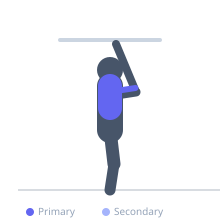

Exercise guide / Chin-Up
Chin-Up
The chin-up is a vertical pulling bodyweight exercise performed with a supinated (underhand) grip. The supinated grip places the biceps in a mechanically advantageous position, increasing their contribution compared to the pull-up. The chin-up is often considered slightly easier for beginners and provides excellent simultaneous stimulation of the lats and biceps.
Primary muscles
latissimus dorsi
biceps brachii long head
biceps brachii short head
Secondary muscles
teres major
brachialis
rhomboid major
Stabilizers
trapezius lower
transverse abdominis
Equipment
Pull-Up Bar (Doorframe)
Optional
Dip Belt


Starting position
- Hang from a bar with a supinated (palms facing you) grip at shoulder width or slightly narrower. Arms fully extended, core lightly engaged.
Setup
- Grip the bar underhand at shoulder width. The narrower grip and supinated wrist position is what distinguishes this from a pull-up.
Steps
- Initiate the movement by depressing the shoulder blades.
- Pull yourself up by driving the elbows down and toward your sides.
- Continue until your chin is above the bar.
- Lower under control until arms are fully extended.
Coaching cues
- Pull the bar toward your chest rather than your chin toward the bar
- Maintain proud posture — do not let the shoulders creep toward the ears
Breathing
- Exhale on the pull, inhale on the descent.
Range of motion
- Full dead hang at bottom, chin above bar at top.
Tempo
- 2-0-2-0
Common mistakes
- Using excessive momentum
- Not reaching full extension at the bottom
Safety
- Avoid if experiencing acute biceps tendon pain
- Fully extend at the bottom of each rep
Training
- strength: 3–6 reps
- hypertrophy: 6–12 reps
- endurance: 12–20 reps
- strength: 3–5 sets
- hypertrophy: 3–5 sets
- endurance: 3–4 sets
- Rest: {'strength': 180, 'hypertrophy': 90, 'endurance': 60}